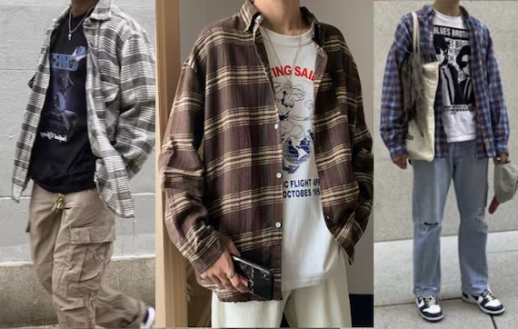
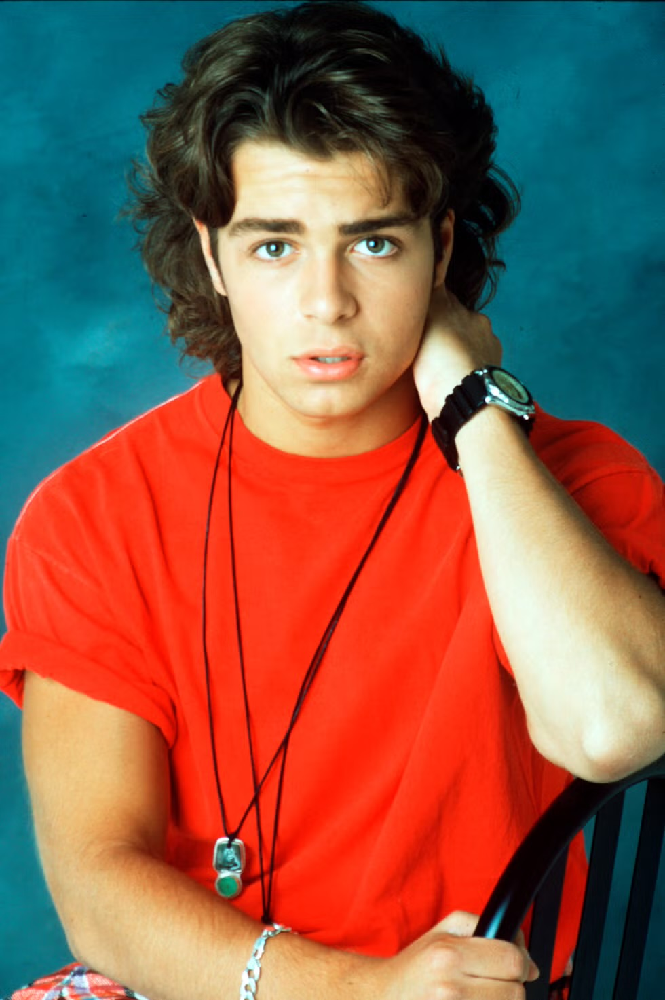
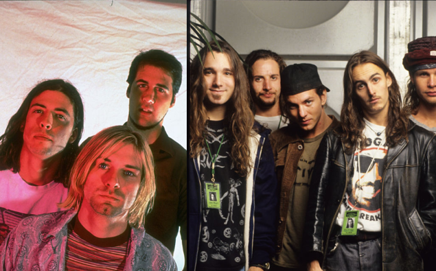
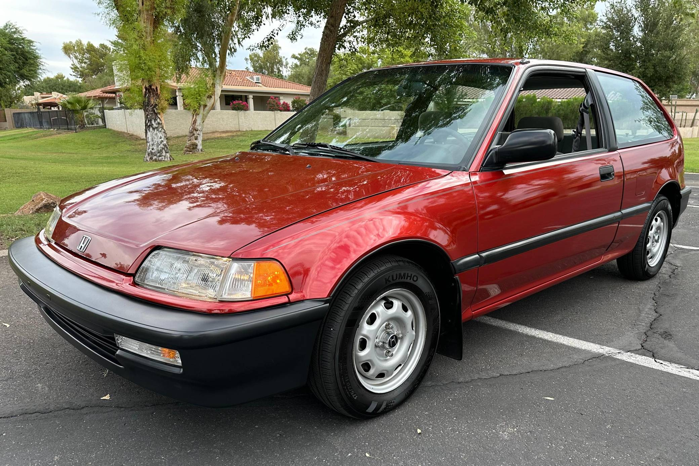
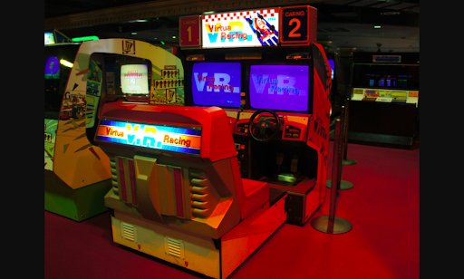
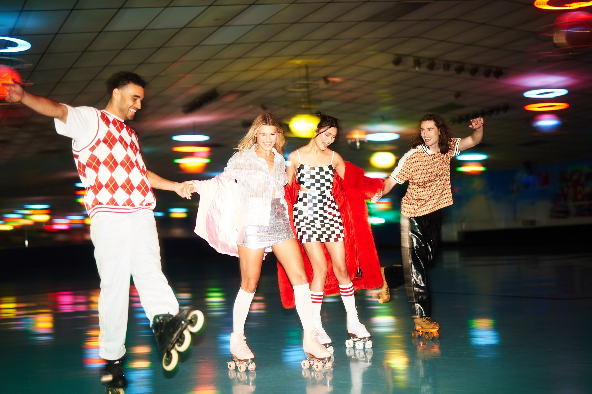

About My Night Out
This webpage takes you back to a typical night out in the 90s with my friends. From the clothes to the music, let's dive into a classic night that captures the feel of the decade!
What I Wore
Went with the iconic 90s look: baggy jeans, a band tee, and a leather jacket. Paired with some chunky sneakers, it’s a style that always got noticed. Topped it off with a backwards cap, of course.
My Hair
Kept it simple with a tousled, messy look—a little gel and good to go. A lot of guys were rocking the undercut or parted styles back then, and I wasn’t one to miss out.
Music on Repeat
Blasting Nirvana, Pearl Jam, and a bit of Tupac to set the mood. It was all about that grunge and hip-hop mix that defined the decade for us.
Getting Around
Piled into my buddy’s classic Jeep Wrangler and hit the streets. With the top down, cruising through town felt like a scene out of a 90s movie.
Places We Went
We started at the local burger joint, grabbed a few bites, then hit up the arcade. Ended the night playing pool at a smoky little dive bar—just the way we liked it.
Activities
Spent time at the arcade playing Street Fighter and pinball, then took over the pool tables. We even stopped by the record store to check out some new releases. All in all, a solid night.